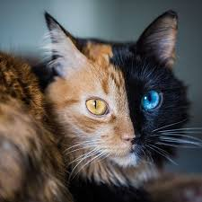

Согласно генетическому исследованию аутосомных маркеров
и митохондриальной
ДНК
979 домашних,
диких и одичавших кошек с трёх континентов,
в том числе барханных кошек (
Felis margarita
),
все домашние кошки по материнской линии происходят
как минимум от пяти представительниц подвида степная
кошка (
Felis silvestris lybica
), имеющих разные гаплотипы
митохондриальной
ДНК
. В митохондриальной гаплогруппе IV,
специфической для ближневосточных и домашних кошек,
идентифицировали 6 субклад и рассчитали время жизни общего предка —
ок.
13 тыс. лет назад, что значительно превышает время
предполагаемого одомашнивания ближневосточных кошек[31][32].
Генетический анализ митохондриальной
ДНК
209 кошек из 30
захоронений на территории Европы, Ближнего Востока и Северной Африки
показал, что домашние кошки распространялись по миру двумя большими
волнами. Первая волна имела место на заре сельского хозяйства 12—9
тыс. лет назад — в Плодородном полумесяце и его окрестностях домашние
кошки расселились вместе с земледельцами по всему Ближнему Востоку.
Несколько тысяч лет спустя вторая волна, вышедшая из Египта, охватила
практически всю Европу и Северную Африку[33][34][35].